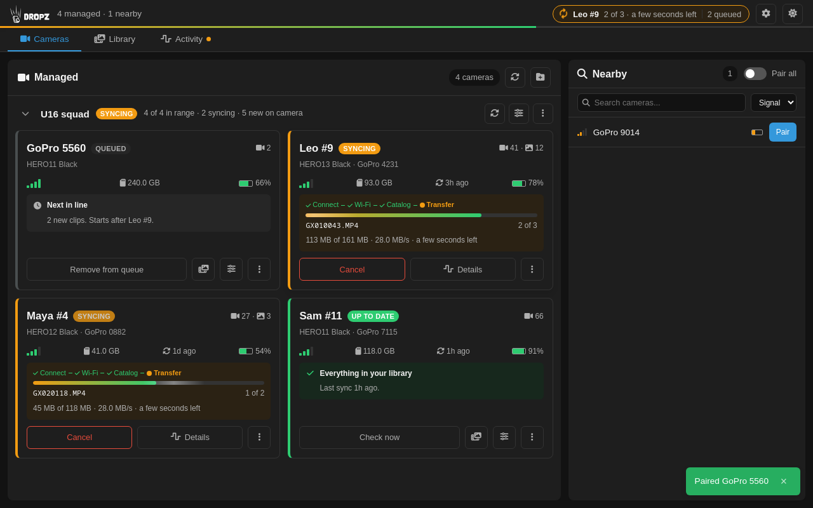
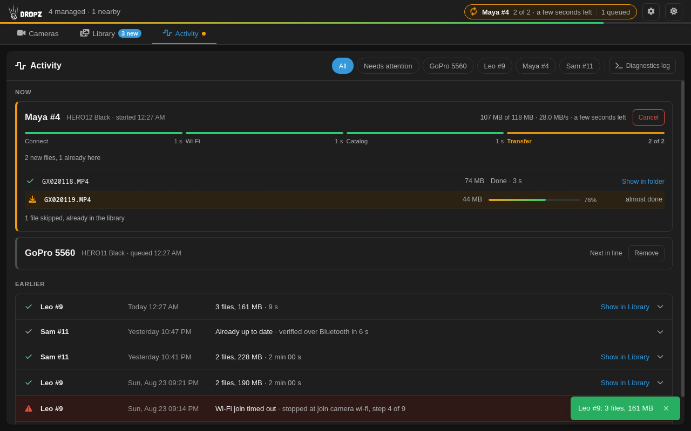
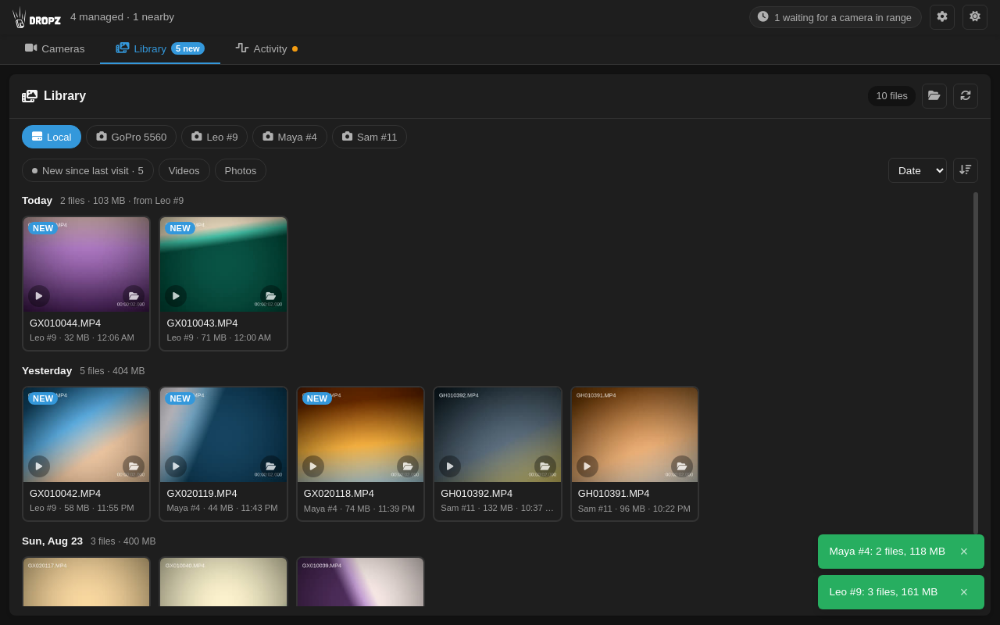
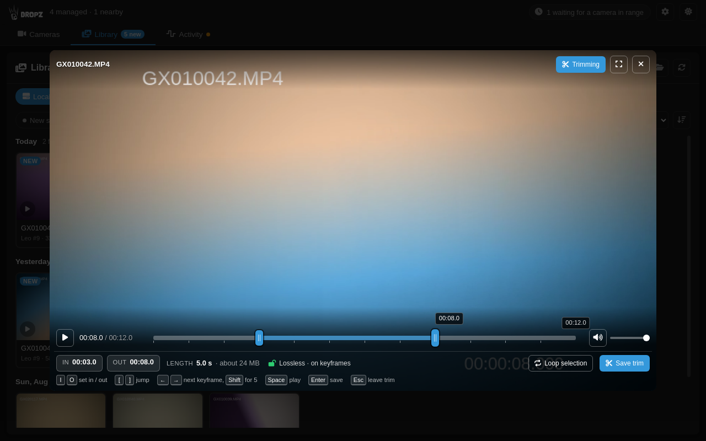

Groups for a team, a shoot, a session
Put cameras in a group, pause it, resume it, or say "use only this group" to switch lineups without unpairing anything. Ungrouped cameras keep working on their own.
One laptop, any number of cameras. Dropz finds GoPro cameras over Bluetooth, pairs them once, and pulls every new clip over Wi-Fi to your computer. No cables, no card readers, no missed files.
Latest release v0.7.0, free and open source, Apache 2.0.
Cameras found, paired, and synced, new clips in the library, one lossless trim. Real app, prop footage.
Twenty athletes, twenty cameras, one laptop at the bench. Name each camera after its owner and the footage sorts itself.
Save each setup as a group. Pause it between takes, switch to the next setup with one click, and never unpair a camera.
Research, rentals, driving schools, race days. Cameras come back, get switched on, and empty themselves while you do the paperwork.
Dropz sees every GoPro in Bluetooth range and pairs the ones you pick. Once. Give each a name: a player, a car, a mount.
Each camera wakes in turn, joins Wi-Fi, and hands over what is new. Downloads resume, failures retry.
Clips land as plain MP4 files in your Videos folder. Preview them, trim losslessly, keep the telemetry.
Put cameras in a group, pause it, resume it, or say "use only this group" to switch lineups without unpairing anything. Ungrouped cameras keep working on their own.
The status bar shows which camera is on the radio, file x of y, and an ETA. Each card shows one state. The Activity tab keeps per-file rows and a history with where a failed run stopped.
Transfers resume where they broke. A failed file is retried after the rest of the pass. Files already on disk are never fetched twice.
Set in and out points with I and O. The cut snaps to real keyframes and copies video, audio, and GPMF telemetry untouched. The original stays.
Thumbnails and low-res proxies for every clip, new arrivals marked, one click from a camera card to its footage.
No account, no cloud, no upload. A Go backend and an Electron app talking over gRPC on localhost. Apache 2.0, source on GitHub.




chmod +x Dropz.AppImage then run it. Needs NetworkManager and a Bluetooth LE adapter.Older builds and release notes: all releases on GitHub.